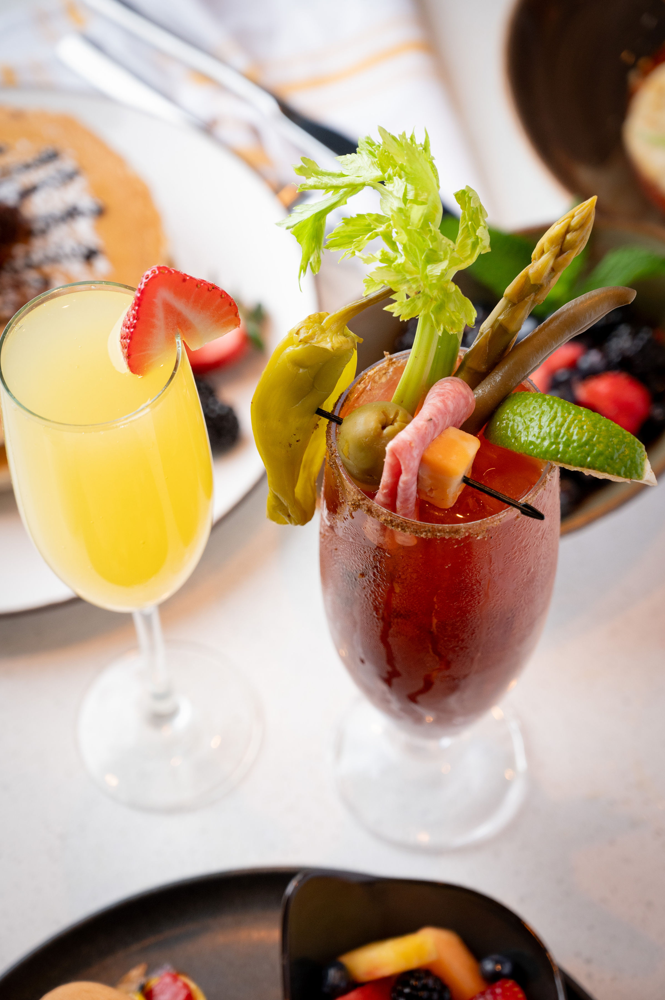

Bloody Mary

Lobster Roll

Beef Filet

Stack Of Pancakes
Chef Bio

Meet Chef Scott
With over 20 years of culinary experience both in a hospitality setting and as a private chef, my menus showcase my diverse background of food preparation.
After graduating from Le Cordon Bleu, I continued to sharpen my culinary skills with some stapled hospitality food and beverage restaurants and hotels, including China Grill, Hard Rock Hotel, and Hilton.
With an appreciation to the entire food and beverage experience, I've curated many of my dishes with cocktails that satisfies the pallet perfectly.
Chicago's Best Brownie By Chef Scott
Watch video on Chicago's signature brownie made by Chef Scott.